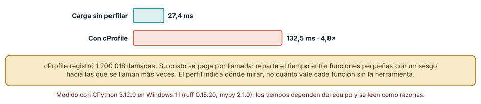
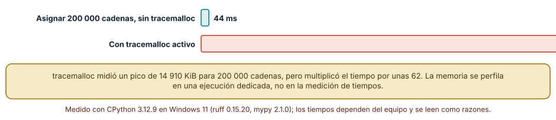
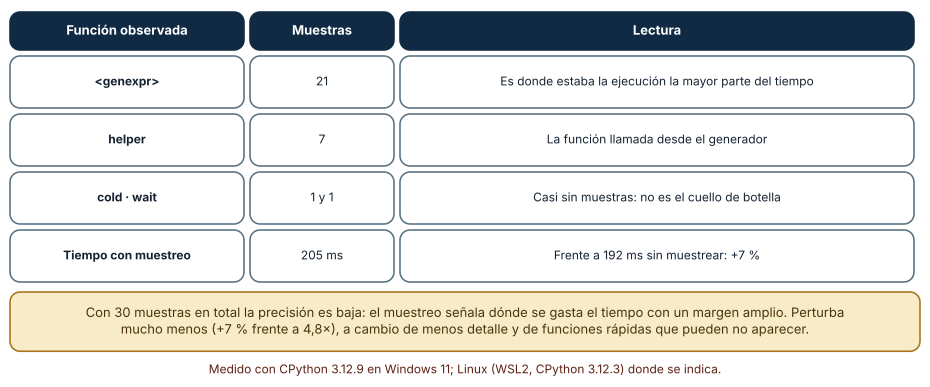

← SE-098 — Depuradores, breakpoints y observación de estado · ↑ Parte 08 · 📚 Índice completo · 🌐 Portal · SE-100 — Compiladores, linters, formatters y análisis estático →
Punto profesional y fundamento pedagógico
Punto profesional. La clase existe para medir CPU, memoria, I/O y red con el instrumento que corresponde a cada recurso.
Por qué aparece aquí. Se sitúa después de Depuradores, breakpoints y observación de estado y antes de Compiladores, linters, formatters y análisis estático: convierte el conocimiento anterior en una decisión observable que la clase siguiente podrá reutilizar. La continuidad se comprueba en el artefacto, no por compartir vocabulario.
Error conceptual que debe corregir. Usar un único profiler y concluir causa por el mayor porcentaje.
Secuencia de aprendizaje. Antes de leer la solución, el estudiante predice el resultado del caso normal y del error conceptual anterior. Luego explica un caso resuelto paso a paso, construye un contraejemplo que cambie la decisión y, sin consultar el texto, reconstruye el mecanismo y lo aplica a una entrada nueva. La secuencia usa predicción, explicación propia, contraste y recuperación. ICAP distingue participación de construcción de conocimiento; How People Learn II exige conectar conocimiento previo, contexto y transferencia; la práctica de recuperación respalda producir de nuevo la explicación tras una demora; y Education for Life and Work exige devolución que explique la causa del error.
Evidencia de aprendizaje. Profile-plan.md con pregunta, instrumento, overhead, datos y optimización verificada. Debe contener predicción previa, observación, explicación causal, contraejemplo, criterio de aceptación y una nota de qué dato haría cambiar la conclusión.
Límite de la conclusión. Un perfil muestral y uno instrumentado tienen sesgos distintos.
Trazabilidad fuente → afirmación
| Fuente primaria u oficial | Afirmación que respalda | Lo que no prueba |
|---|---|---|
| Python Debugging and Profiling | Pdb, cprofile, timeit, tracemalloc y límites instrumentales; autoridad: Python Software Foundation | No demuestra por sí sola que el artefacto del estudiante sea correcto. |
| Debug Adapter Protocol | Breakpoints, frames, variables y negociación de capacidades; autoridad: Microsoft | No demuestra por sí sola que el artefacto del estudiante sea correcto. |
Antes de empezar
Esta clase continúa el entorno reproducible de diagnóstico de la Parte 08. Recupera la evidencia de la clase anterior, añade una decisión propia de Profilers de CPU, memoria, I/O y red y deja un artefacto que la clase siguiente deberá consumir. La pregunta activa es: ¿Qué recurso está realmente saturado y qué herramienta puede atribuirlo?
Prerrequisitos
- Haber completado la clase anterior o reconstruir su contrato y evidencia.
- Python 3.11 o posterior, terminal, editor y Git; un segundo runtime es opcional y debe declararse.
- Trabajar con fixtures sintéticos: ninguna observación necesita datos de una persona o sistema real.
Problema auténtico
La biblioteca de estructuras y algoritmos se siente lento. El equipo optimiza CPU, pero el perfil revela espera de disco al registrar cada evento y memoria retenida por snapshots antiguos.
Objetivos observables
Al terminar podrás explicar los cinco mecanismos de esta clase, predecir su comportamiento antes de ejecutar, construir un caso normal y uno límite, diagnosticar el fallo controlado, comparar una alternativa y entregar evidencia que otra persona pueda reproducir.
Mapa conceptual
Ver la notación fuente del diagrama
flowchart LR
N1[Tiempo de pared / CPU] --> N2[Perfil determinista / muestreo] --> N3[Asignaciones, retención / pico] --> N4[I/O / red] --> N5[Perfil como hipótesis]
N5 -->|fallo o cambio| N1El mapa se lee como una cadena de razonamiento, no como fases obligatorias del runtime. La flecha de retorno indica que un fallo o cambio de requisito obliga a revisar el modelo inicial; no autoriza a parchear solo la última salida.
Temas y por qué importan
| Tema | Por qué cambia una decisión profesional | Evidencia mínima |
|---|---|---|
| Tiempo de pared y CPU | Wall time incluye espera; CPU time cuenta ejecución en procesador. | Predicción, traza causal y contraejemplo de Tiempo de pared y CPU en profile-plan.md |
| Perfil determinista y muestreo | El perfil determinista registra llamadas y tiempos con detalle, añadiendo overhead. | Predicción, traza causal y contraejemplo de Perfil determinista y muestreo en profile-plan.md |
| Asignaciones, retención y pico | Memoria asignada no equivale a memoria retenida ni RSS. | Predicción, traza causal y contraejemplo de Asignaciones, retención y pico en profile-plan.md |
| I/O y red | Trazar duración, bytes y concurrencia por operación separa espera de cómputo. | Predicción, traza causal y contraejemplo de I/O y red en profile-plan.md |
| Perfil como hipótesis | El perfil señala dónde se observa costo, no por qué. | Predicción, traza causal y contraejemplo de Perfil como hipótesis en profile-plan.md |
Conceptos y decisiones
1. Tiempo de pared y CPU
Wall time incluye espera; CPU time cuenta ejecución en procesador. Una tarea I/O-bound puede tener pared alta y CPU baja. Perfilar solo funciones de CPU no atribuye latencia externa ni cola.
2. Perfil determinista y muestreo
El perfil determinista registra llamadas y tiempos con detalle, añadiendo overhead. El muestreo interrumpe periódicamente y aproxima distribución con menor intrusión. Eventos cortos o raros pueden perderse; se elige según pregunta.
3. Asignaciones, retención y pico
Memoria asignada no equivale a memoria retenida ni RSS. tracemalloc compara snapshots de asignaciones Python; no observa necesariamente memoria nativa completa. Una referencia viva explica retención mejor que el tamaño de una línea aislada.
4. I/O y red
Trazar duración, bytes y concurrencia por operación separa espera de cómputo. Un profiler general puede agrupar todo como llamada del sistema. Correlación y timestamps monotónicos permiten relacionar solicitud, bloqueo y respuesta.
5. Perfil como hipótesis
El perfil señala dónde se observa costo, no por qué. Se formula una causa, cambia una variable y repite con salida correcta. Optimizar una función caliente irrelevante para el SLO es trabajo sin impacto.
El perfilador determinista altera la carga
Un perfilador responde dónde se gasta el tiempo, pero la respuesta depende de cómo mide. cProfile registra cada llamada. Sobre una carga con 1 200 018 llamadas, la ejecución sin perfilar tomó 27,4 ms y con cProfile, 132,5 ms: 4,8 veces. El costo se paga *por llamada*, de modo que las funciones pequeñas y muy llamadas aparecen inflamadas respecto a un bucle largo con pocas llamadas. El perfil sigue siendo útil para encontrar dónde mirar, pero no para afirmar cuánto vale cada función sin la herramienta.

Cómo leer la figura. Las dos barras comparan la misma carga con y sin perfilador. Dónde deja de valer: el factor 4,8 es de esta carga, formada casi por llamadas; una carga dominada por cálculo dentro de una sola función se perturbaría mucho menos.
Medir memoria tiene su precio
tracemalloc rastrea las asignaciones y permite saber qué línea reservó memoria. Para crear 200 000 cadenas midió un pico de 14 910 KiB; pero la creación pasó de 44 ms a 2 719 ms, unas 62 veces más. Por eso la memoria se perfila en una ejecución dedicada, nunca en la misma medición de tiempos. La razón es la misma de la sección anterior: cada mecanismo de observación cambia lo observado, y mezclar dos mecanismos (tiempo y memoria) en una misma medida invalida ambas.

Cómo leer la figura. La diferencia de escala es la lectura: 44 ms frente a 2 719 ms. Dónde deja de valer: el factor depende del número de asignaciones y de la profundidad de pila registrada; con pocas asignaciones grandes el costo sería menor.
Muestrear en lugar de contar
Un perfilador por muestreo no registra cada llamada: pregunta periódicamente en qué función está el programa. Un hilo muestreador consultó sys._current_frames() cada milisegundo mientras se ejecutaban un generador intensivo y una ordenación. Resultado: 21 muestras en <genexpr>, 7 en helper y una en cold y en wait; el tiempo total fue 205 ms frente a 192 ms sin muestrear, un 7 % más. Perturba mucho menos (4,8× frente a 1,07×), a cambio de menos detalle y de incertidumbre: con 30 muestras, una función que gasta el 5 % del tiempo puede no aparecer.

Cómo leer la figura. Las filas son funciones y su número de muestras; la última compara tiempos. Dónde deja de valer: el muestreo sobre hilos de Python depende del intérprete y del bloqueo global; no ve el tiempo fuera de Python (extensiones nativas) con el mismo detalle.
Definiciones de trabajo
- tiempo de pared y cpu: wall time incluye espera; cpu time cuenta ejecución en procesador.
- perfil determinista y muestreo: el perfil determinista registra llamadas y tiempos con detalle, añadiendo overhead.
- asignaciones, retención y pico: memoria asignada no equivale a memoria retenida ni rss.
- i/o y red: trazar duración, bytes y concurrencia por operación separa espera de cómputo.
- perfil como hipótesis: el perfil señala dónde se observa costo, no por qué.
Las definiciones son operativas para el entorno reproducible de diagnóstico. No convierten términos con historia más amplia en sinónimos y deben contrastarse con la documentación primaria enlazada al final.
Ejemplo mínimo
python -m cProfile -o evidence/cpu.prof -m algorithm_library.benchmark
python -X tracemalloc=10 -m unittest tests.test_snapshot
python -m timeit -r 9 -n 1000 "target()"Antes de ejecutar, predice estado, resultado y error. Después registra versión, comando y salida. Si el fragmento es pseudocódigo o pertenece a otro lenguaje, etiquétalo como tal y no afirmes que fue ejecutado.
Ejemplo profesional
En el entorno reproducible de diagnóstico, una investigación conserva síntoma, entorno, reproducción, hipótesis, observaciones, causa, corrección y regresión. La implementación de esta clase debe conservar ese contrato aunque cambie la forma interna. El caso profesional no pregunta únicamente si produce una salida: pregunta quién puede producirla, qué estado observa, cómo falla y qué rastro permite disputar una decisión incorrecta.
Compara el caso normal con autorización falsa, evidencia incompleta, empate y repetición. Un mecanismo es apropiado cuando esas diferencias quedan visibles y localizadas; es peligroso cuando dependen de orden accidental, estado oculto o una convención que el consumidor no puede conocer.
Práctica guiada
- Copia el contrato de entrada y salida antes de escribir implementación.
- Predice el caso normal y un límite; identifica la invariante que no puede romperse.
- Implementa la versión mínima sin I/O dentro del núcleo.
- Ejecuta el caso y conserva comando, versión y salida bajo
evidence/. - Introduce el fallo controlado, reduce la reproducción y formula dos hipótesis rivales.
- Corrige la causa, añade regresión y ejecuta el conjunto completo.
- Compara con otro paradigma o lenguaje indicando qué semántica se preserva.
Ejercicios
- Sobrecosto: calcula el factor de perturbación de
cProfile(132,5 ms / 27,4 ms) y de tu propia carga. - Muestras: con 30 muestras en total, estima cuántas esperarías para una función que gasta el 5 % del tiempo y por qué puede no aparecer.
- Memoria: mide el pico de memoria de crear un millón de enteros en una lista y en un
array('q'), con ejecuciones separadas de las de tiempo. - Decisión: redacta el criterio para aceptar una optimización (qué se mide, cuántas veces y con qué margen).
Reto verificable
Entrega implementación, fixtures, pruebas y un informe corto. Se aprueba si otra persona ejecuta desde checkout limpio, obtiene los mismos resultados y puede relacionar cada rama o transformación con una regla del dominio. No se aprueba por cantidad de archivos ni por usar la sintaxis característica del paradigma.
Caso conductor
El entorno reproducible de diagnóstico parte de una inversión de empates en la biblioteca de estructuras y algoritmos, captura versión y entrada mínima, compara un entorno sano con uno afectado y conserva la primera divergencia observable. Cambia después una sola regla o condición y revisa qué archivos, pruebas y trazas debieron modificarse. Esa superficie de cambio alimenta el proyecto final de la parte.
Preguntas frecuentes
¿Perfilador determinista o por muestreo?
El determinista cuenta todas las llamadas con exactitud y cuesta más; el de muestreo perturba poco y da una vista estadística. Se usa el de muestreo para encontrar el cuello de botella y el determinista para entender un caso concreto.
¿Cuántas muestras necesito?
Depende de la fracción de tiempo que se quiere resolver. Para detectar una función que gasta el 5 % con confianza razonable hacen falta cientos de muestras, no treinta; se alarga la ejecución o se reduce el intervalo.
¿Por qué el perfil dice que lo lento es helper y optimizarlo no ayuda?
Porque el perfilador infla las funciones muy llamadas. La comprobación es medir el tiempo total del programa antes y después del cambio, sin perfilador.
¿Se puede perfilar en producción?
El muestreo de baja frecuencia sí, con permiso y límites. Un perfilador determinista, no: multiplica el costo.
Fallo controlado y diagnóstico
Perfila generación de fixtures y concluye que el algoritmo es lento. Mueve preparación fuera de la región, valida resultado y repite manteniendo la misma carga.
Registra síntoma, entrada mínima, hipótesis, observación que descarta cada hipótesis, causa, corrección y prueba de regresión. No cambies simultáneamente implementación, fixture y expectativa.
Reproduce un perfil engañoso. Escribe dos funciones que gasten el mismo tiempo real: una con un bucle largo y otra con un millón de llamadas diminutas. Perfila con cProfile. Síntoma: el perfil acusa a la función de llamadas diminutas con un tiempo mucho mayor. Hipótesis: el costo por llamada del perfilador la infla. Prueba: mide cada función sin perfilador con time.perf_counter y compara las proporciones. Conclusión: el perfil es una guía, no una medida; la decisión de optimizar se confirma con tiempos reales. Guarda en checks.md ambas proporciones y la corrección que decidirías.
Errores comunes y cómo corregirlos
| Síntoma | Causa | Corrección |
|---|---|---|
| Se optimiza una función que no era el problema | Perfil determinista inflado por llamadas | Confirmar con el tiempo total sin perfilador |
| El perfil de memoria hace la prueba 62 veces más lenta | tracemalloc activo en la medición de tiempo | Perfilar memoria y tiempo en ejecuciones separadas |
| Una función rápida no aparece en el muestreo | Pocas muestras | Alargar la ejecución o muestrear más a menudo |
| Se perfila con datos de tamaño trivial | Muestra no representativa | Usar tamaños del mismo orden que en producción |
| Se comparan perfiles de máquinas distintas | Entorno distinto | Comparar proporciones y declarar el equipo |
Entorno y archivos clave
work/SE-099/
├── README.md
├── diagnostic_environment/
│ ├── domain.py
│ └── se_099.py
├── fixtures/cases.json
├── tests/test_se_099.py
└── evidence/diagnosis.mdEl README declara plataforma, runtimes, comandos, limpieza y límites. Evita dependencias externas cuando la biblioteca estándar permita observar el mecanismo; si agregas una, fija procedencia y versión.
Seguridad, ética y accesibilidad
- la autorización forma parte del dominio y no se infiere por ausencia de rechazo;
- no uses
eval, reglas descargadas ni serialización insegura; - limita colas, recursión, tamaño de entrada y tiempo de evaluación;
- redacta trazas y conserva una explicación textual además de color o animación;
- una recomendación automatizada debe poder revisarse, impugnarse y corregirse;
- respeta licencias de ejemplos y atribuye adaptaciones.
Puente hacia el trabajo con agentes
El «perfil» de un agente es su traza: cuántas llamadas a herramientas hizo, cuántos tokens consumió y dónde esperó. Medirlo tiene el mismo efecto del observador: registrar demasiado en el contexto aumenta el costo. La distinción entre contar todo y muestrear tiene su equivalente: registrar cada llamada para auditar casos concretos y muestrear ejecuciones para vigilar la tendencia. Y no se optimiza un agente por la traza de un único caso.
Transferencia
Traslada un fixture al segundo modelo, herramienta, plataforma o lenguaje. Compara representación de ausencia, error, mutabilidad, orden y cancelación. La transferencia está lograda cuando el contrato se conserva y las diferencias están explicadas, no cuando la interfaz se parece.
Evaluación y evidencia
| Criterio | Evidencia para aprobar |
|---|---|
| comprensión | explicación causal de los cinco mecanismos |
| corrección | normal, límite, inválido y contraejemplo |
| diseño | estado, efectos y contrato localizables |
| diagnóstico | reproducción mínima y regresión |
| transferencia | comparación semántica, no estética |
| reproducibilidad | versiones, comandos, salida y límites |
Fuentes
- Language Server Protocol 3.18 — Mensajes, capacidades y sincronización entre editor y servidor; autoridad: Microsoft.
- Debug Adapter Protocol — Breakpoints, frames, variables y negociación de capacidades; autoridad: Microsoft.
- Python Debugging and Profiling — Pdb, cprofile, timeit, tracemalloc y límites instrumentales; autoridad: Python Software Foundation.
- Python venv — Aislamiento de intérprete, scripts y entorno virtual; autoridad: Python Software Foundation.
- Development Container Specification — Configuración reproducible de herramientas y ciclo de vida del contenedor; autoridad: Dev Container Specification maintainers.
- Web Content Accessibility Guidelines 2.2 — Percepción, operación por teclado y reducción de barreras en interfaces; autoridad: W3C.
Cada fuente respalda el mecanismo indicado; ninguna demuestra que la implementación del entorno reproducible de diagnóstico sea correcta. Esa afirmación depende de fixtures, pruebas, trazas y revisión reproducible.
- Python: perfiladores
cProfileyprofile: funcionamiento del perfilador determinista y su sobrecosto, medido en la Figura 1. - Python:
tracemalloc: rastreo de asignaciones de memoria y su costo, medido en la Figura 2. - Python:
sys._current_frames: base del muestreo por hilo usado en la Figura 3.
Límites y siguiente paso
Un perfil dinámico observa entradas ejecutadas. La siguiente clase combina compilador, linter, formatter y análisis estático para detectar clases distintas de defectos.
Glosario
- tiempo de pared y cpu: wall time incluye espera; cpu time cuenta ejecución en procesador.
- perfil determinista y muestreo: el perfil determinista registra llamadas y tiempos con detalle, añadiendo overhead.
- asignaciones, retención y pico: memoria asignada no equivale a memoria retenida ni rss.
- i/o y red: trazar duración, bytes y concurrencia por operación separa espera de cómputo.
- perfil como hipótesis: el perfil señala dónde se observa costo, no por qué.
← SE-098 — Depuradores, breakpoints y observación de estado · ↑ Parte 08 · 📚 Índice completo · 🌐 Portal · SE-100 — Compiladores, linters, formatters y análisis estático →